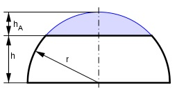

Aufgabe 334 Bei einer Kugelzone mit einer Höhe h von 2 cm und einer Fläche M von 30 cm2 entspricht der große Durchmesser dem Durchmesser der dazugehörigen Kugel. Wie groß ist das Volumen V der zur Zone gehörenden Schicht?

M = 2 * л * r * h | : 2 * л * h M 30 cm2 r = ----------- = ---------------- = 2,39 cm 2 * л * h 2 * л * 2 cm Volumen: Kugelschicht = Halbkugel - Kugelabschnitt (-segment) Höhe hA des Kugelabschnitts = = 2,39 cm - 2 cm = 0,39 cm Durchmesser d der Halbkugel = = 2 * 2,39 cm = 4,78 cm d3 * л л * hA2 V = --------- - --------- * (3 * r - hA) 12 3 4,783 * л л * 0,392 V = ------------ - ----------- * 12 3 * (3 * 2,39 - 0,39) cm3 V = 28,6 cm3 - 1,08 cm3 = 27,5 cm3